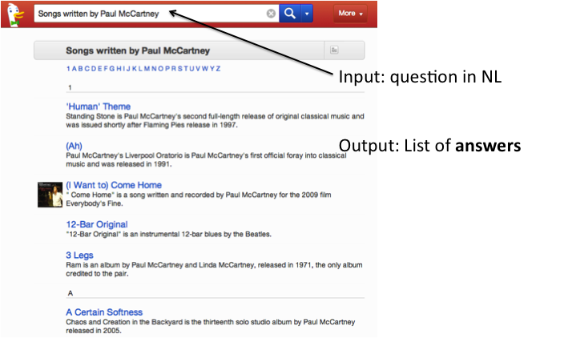
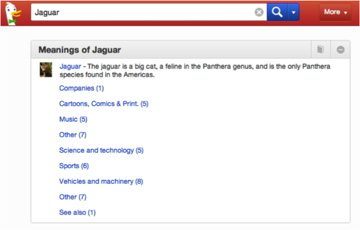

Similar semantic features are found in other web search engines such as DuckDuckGo [23] that combines pseudo natural language expressions and semantics to assist the user in focussing down their search. In the example below a natural language query has produced a list of answers rather than the more conventional list of documents matching the search query.

Figure 45: DuckDuckGo producing a list of answers.
DuckDuckGo can also perform disambiguation to offer alternative matches for a search query. In the example below, alternative meanings of the search term jaguar have been offered, grouped into classes such as companies and music. The user can select one of these classes to drill down to their intended meaning.

Figure 46: Query disambiguation in DuckDuckGo.